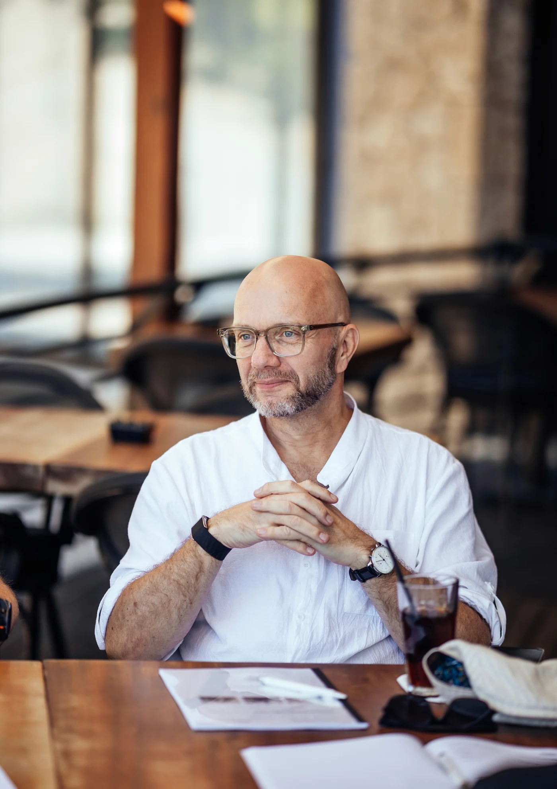
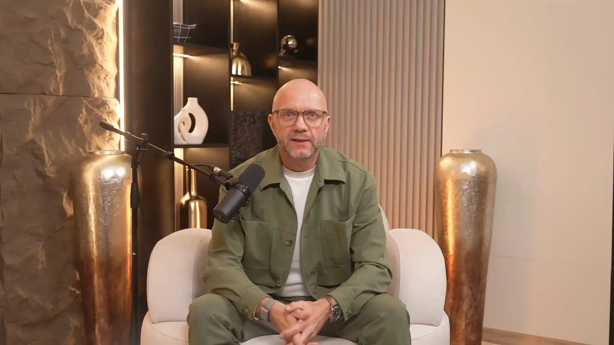

227 von 250 Bewertungen mit 5 Sternen auf ProvenExpert · über 8.000 Teilnehmer
Was ist Rhetorik?Was Rhetorik wirklich ist
und was sie nicht ist.
Kein Verkaufstext. Eine Erklärung, für alle, die hier zum ersten Mal sind.
Rhetorik ist die Kunst der Rede. Hier erfährst du, woher sie kommt, wie sie wirkt und wie du sie lernst. Mit Beispielen von Michael Ehlers, der seit 1990 Menschen in Rhetorik trainiert.
Kostenlos, ein Video von Michael Ehlers. Ein persönliches Gespräch danach ist freiwillig.
Direkt zur ErklärungWas ist Rhetorik, einfach erklärt?
Rhetorik ist die Kunst der Rede. Das Wort kommt aus dem Altgriechischen und heißt übersetzt Redekunst. Schon Aristoteles beschrieb sie als Fähigkeit, bei jeder Sache das zu erkennen, was überzeugen kann. Heute meint Rhetorik alles, was dafür sorgt, dass deine Worte bei anderen ankommen: im Meeting, auf der Bühne und im Gespräch.
Was Rhetorik nicht ist
Viele Menschen haben ein falsches Bild von Rhetorik. Vier Missverständnisse kommen besonders oft vor.
Rhetorik ist kein Schauspiel.
Du lernst keine fremde Rolle und keine einstudierten Gesten. Gute Rhetorik passt zu deiner Person. Nicht anders werden, klarer werden.
Rhetorik ist keine Frage der Lautstärke.
Wer am lautesten spricht, überzeugt nicht automatisch. Rhetorik bedeutet, Wirkung zu erzielen.
Rhetorik ist kein Talent nur für Extrovertierte.
Introvertierte überzeugen oft durch Präzision und Ruhe. Mit den richtigen Techniken nutzt du diese Stärken, ohne dich zu verbiegen.
Rhetorik ist keine Manipulation.
Manipulation will andere gegen ihr Interesse lenken. Rhetorik hilft dir, deine Sache klar und ehrlich zu vertreten. Wer die Muster kennt, erkennt auch Manipulation schneller.
Ethos, Pathos, Logos: Die drei Mittel der Überzeugung
Aristoteles unterschied drei Formen der Überzeugung. Sie gelten bis heute als Grundlage der Rhetorik.
Ethos: Glaubwürdigkeit
Wie glaubwürdig der Redner wirkt. Oft zählt zuerst, wer spricht, und erst danach, was gesagt wird.
Ein Beispiel aus dem Alltag: Eine Kollegin hält Wort und kennt ihr Thema. Wenn sie etwas vorschlägt, hört das Team zu.Pathos: Gefühl
Der emotionale Zustand der Zuhörer. Eine Rede wirkt, wenn sie Menschen berührt.
Ein Beispiel: Eine Geschichte von einem echten Kunden bleibt länger im Kopf als jede Tabelle.Logos: Argument
Das Argument selbst, also Fakten und Gründe.
Ein Beispiel: Du zeigst drei Zahlen, die deinen Vorschlag stützen, und erklärst, was daraus folgt.Gute Rhetorik braucht alle drei. Ein starkes Argument ohne Glaubwürdigkeit verpufft. Gefühl ohne Argument wirkt schnell wie Show.
Die fünf Schritte einer Rede
Die klassische Rhetorik beschreibt fünf Schritte von der Idee bis zum Vortrag. Mit den fünf Säulen der Rhetorik sind oft diese fünf Schritte gemeint. Eine feste Einteilung gibt es nicht.
Finden
(inventio)Du sammelst Gedanken und Argumente. Was willst du sagen, und was braucht dein Publikum? Hier entscheidest du auch, welches Beispiel deinen Punkt am besten zeigt.
Ordnen
(dispositio)Du baust eine Struktur: Einstieg, Hauptteil, Schluss. So können andere dir folgen. Der Einstieg holt die Aufmerksamkeit, der Schluss sagt, was bleiben soll.
Formulieren
(elocutio)Du suchst die passenden Worte und Bilder. Kurze Sätze, klare Begriffe.
Einprägen
(memoria)Du merkst dir die Rede so, dass du frei sprechen kannst. Ein paar Stichworte reichen, wenn die Struktur steht.
Vortragen
(actio)Stimme, Blick, Haltung und Pausen. Hier entscheidet sich, was im Raum ankommt.
Von Michael Ehlers stammt das Buch „Die 5 Säulen der positiven Kommunikation“.
Wo es im Beruf auf Rhetorik ankommt
Rhetorik ist kein Thema nur für Redner auf großen Bühnen. Sie steckt in vielen Momenten, die du jede Woche erlebst.
Die Bedeutung von Rhetorik wächst mit deiner Verantwortung. Je mehr Menschen dir zuhören, desto mehr zählt jedes Wort. Das gilt für die Teamleiterin im Montagsmeeting genauso wie für den Gründer vor Investoren. Wer fachlich gut ist, hat oft viel zu sagen. Rhetorik sorgt dafür, dass es auch gehört wird.
Typische Fehler und wie du sie vermeidest
Zu viel auf einmal. Wer alles sagen will, sagt am Ende nichts. Besser: ein Kerngedanke pro Rede, dazu ein Beispiel.
Verneinungen. Ein Satz wie „Das ist kein Problem“ lässt das Wort Problem im Kopf. Besser: Sag, was ist, statt was nicht ist.
Keine Pausen. Viele Redner füllen jede Sekunde. Eine Pause gibt deinen Worten Gewicht und dir Zeit zum Denken.
Ablesen statt sprechen. Wer abliest, verliert den Kontakt zum Publikum. Besser: Stichworte statt ganzer Sätze.
Ein fremder Stil. Wer eine Rolle spielt, wirkt unecht. Besser: Arbeite mit deiner eigenen Art und mach sie klarer.
Wirkung beginnt nicht bei der Technik.
Die meisten Rhetoriktrainings starten bei Werkzeugen. Michael Ehlers startet davor: bei Persönlichkeit, Selbstbild, Mustern und innerer Stabilität. Erst wenn das steht, tragen die Werkzeuge.
Persönlichkeit. Kongruenz. Wirkung.
Persönlichkeit.
Wer du bist, bevor du sprichst.
Kongruenz.
Wenn Haltung und Worte dasselbe sagen.
Wirkung.
Was davon im Raum ankommt.
In den Seminaren schaut Michael genau hin [von Kunde bestätigen: Leitet Michael die Seminare selbst], wie eine Aussage im Raum ankommt. Und was von ihr bleibt, wenn jemand widerspricht. Seine Rückmeldung ist direkt. Du arbeitest mit dem, was du schon mitbringst. Mehr über Michael
Drei Beispiele aus dem Alltag
In seinem Podcast „Unübersehbar“ zeigt Michael Ehlers an echten Fällen und Gedanken, wie Rhetorik wirkt. Drei Beispiele daraus.
Sag nie, was du nicht bist
1973 sagte Richard Nixon mitten in der Watergate-Affäre: „I am not a crook.“ Hängen blieb ein Wort: crook, also Gauner. Michael erklärt das so: Unser Gehirn macht aus Verneinungen Bilder. Darum wird ein Vorwurf, den du bestreitest, oft stärker. Besser ist ein Satz, der sagt, was du bist.
Wer den Rahmen setzt, gewinnt
„Steuerlast“ und „Steuerbeitrag“ meinen dasselbe Geld. Trotzdem wirken die Wörter ganz verschieden. Das nennt man Framing. Michaels Rat: Ein Dementi verstärkt oft den fremden Rahmen. Setze lieber deinen eigenen Rahmen, statt am fremden zu reparieren.
Kommunikation ist ein Raum
So sagt es Michael in seinem Podcast: Wer den Raum nicht selbst bespielt, überlässt ihn anderen. Das gilt im Meeting genauso wie in der Öffentlichkeit. Auch dein Schweigen wird gelesen. Wenn du nichts sagst, füllen andere die Lücke mit ihrer Version.
Wie lernt man Rhetorik?
Durch Üben mit ehrlichem Feedback. Bücher geben dir das Wissen. Unter Druck hilft dir aber nur, was du geübt hast. Rhetorik ist ein Handwerk. Wer regelmäßig übt, wird sicherer.
Im Seminar übst du genau so, nur intensiver: drei Tage in einer kleinen Gruppe von höchstens 14 Menschen, dazu ein Tag Get Together. Du hältst Reden vor der Gruppe und wirst dreimal auf Video aufgenommen. Die Auswertung kommt sofort. Im VR-Training sprichst du vor einem virtuellen Publikum. Mehr dazu auf der Seite Seminare.
Drei Übungen, die du heute beginnen kannst:
Zwei Minuten, ein Gedanke.Nimm ein Thema aus deinem Alltag und sprich zwei Minuten frei darüber. Ein Gedanke, ein Beispiel, ein Satz zum Schluss.
Sieh dich selbst.Nimm dich mit dem Handy auf und schau dir die Aufnahme an. Achte zuerst auf Pausen und Blick, dann auf die Worte.
Frag nach Rückmeldung.Bitte eine Person, der du vertraust, um ein ehrliches Feedback. Was kam an? Was blieb hängen?

Das kostenlose Training von Michael Ehlers
Nicht mehr überhört, sondern unübersehbar. In einem kostenlosen Video zeigt Michael Ehlers, wie du Aufmerksamkeit und Vertrauen gewinnst, ohne laut zu werden oder dich zu verbiegen [von Kunde bestätigen: Inhalt und Länge des Trainings]. In seine Arbeit fließen über 30 Jahre Erfahrung mit Executives, Unternehmern, Politikern und Profisportlern.
Das Video ist für alle, die gehört werden wollen, ohne sich zu verstellen. Nach dem Video kannst du ein kostenloses persönliches Gespräch buchen. Das ist freiwillig.